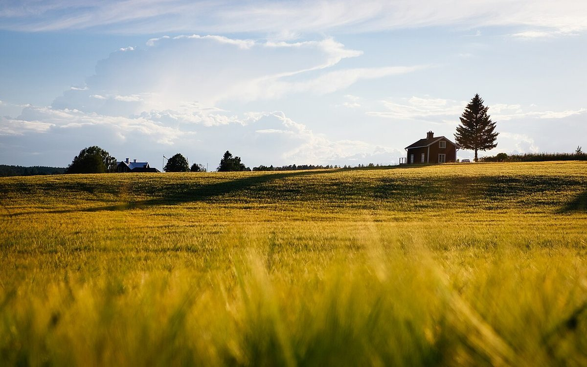

二畝
店のこと
お店について確認できているのは、所在地とInstagramのアカウントだけです。
「想像してみる」の部分は制作側の想像です。お店の実際の様子・考え・メニューとは関係がありません。
確認できていること
- 店名は「くらしのら」、業種はカフェ
- 所在地は栃木県鹿沼市西沢町３３７−１(〒322-0344)
- 電話番号はなし。連絡はInstagramから
- 営業時間・定休日・メニュー・価格・ご予約・駐車場は準備中

想像してみる
畝の間を、のんびり歩く。
制作側は店名から、まっすぐな畝の列や、土と緑の色を思い浮かべました。実際のお店の雰囲気は分かりません。お店の写真が届いたら、ここを差し替えます。


